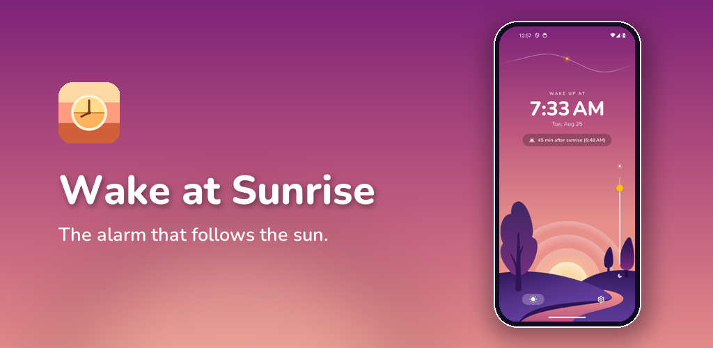
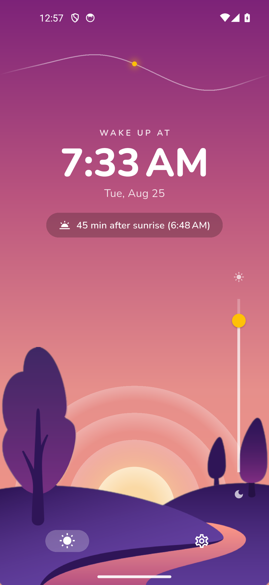
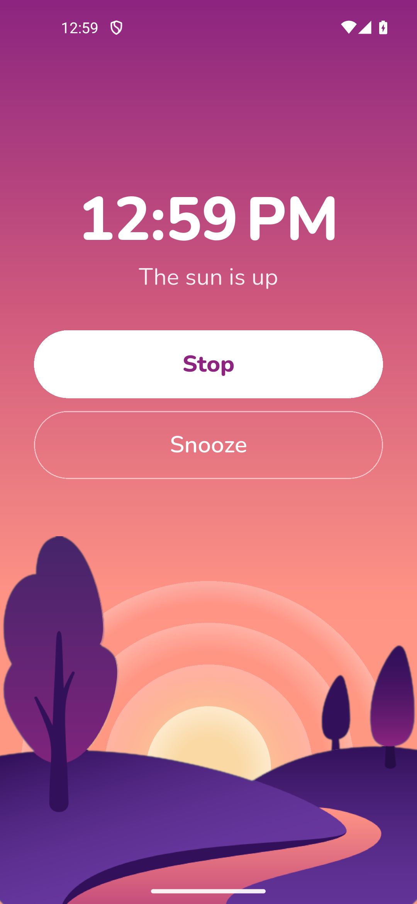
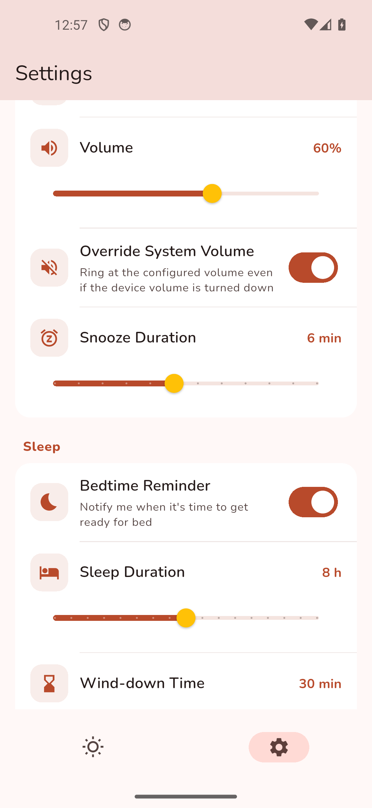

Press kit
Updated November 16, 2026 · Português
Wake at Sunrise is an Android alarm clock that rings at the real sunrise where you are — computed on the phone — and moves with it a minute or two a day through the seasons and across time zones. Users choose to wake at sunrise or any number of minutes before or after it. It is free, with an optional Premium for gentle wake-up sounds and bedtime reminders; there is no account and no ads, and the location never leaves the device. It is built by an independent developer.
| Name | Wake at Sunrise |
|---|---|
| Developer | Independent developer |
| Platform | Android 7.0 and later · iOS in development |
| Released | November 16, 2026, on Google Play |
| Price | Free · optional Premium, yearly or one-time lifetime |
| Languages | English, Portuguese (Brazil) |
| Privacy | No account, no ads, no tracking; sunrise computed on the device |
Images









Links
Contact
For interviews, review codes or anything else, write to the developer email.